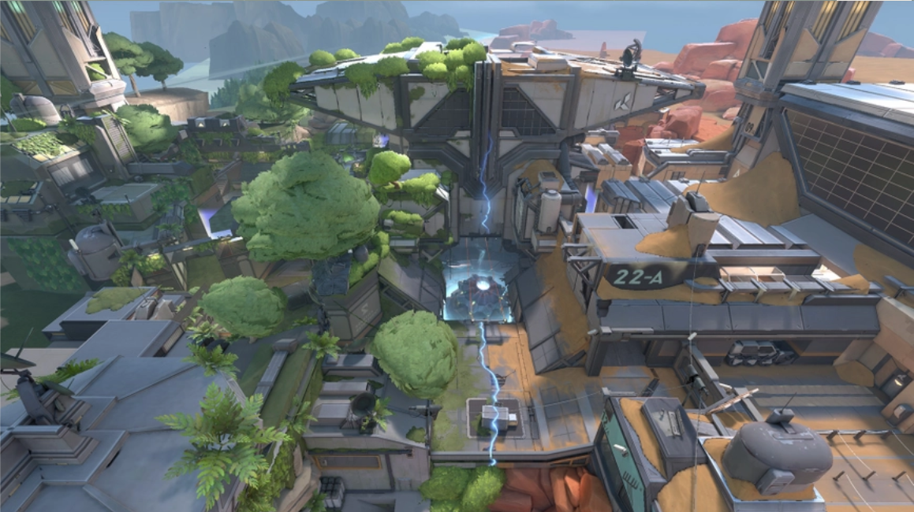
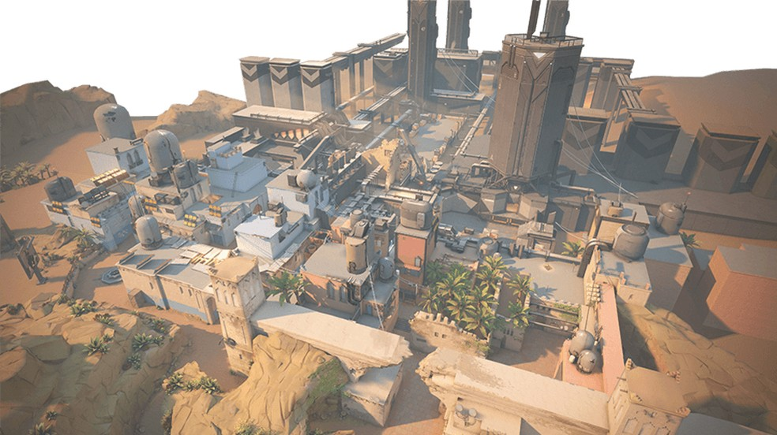
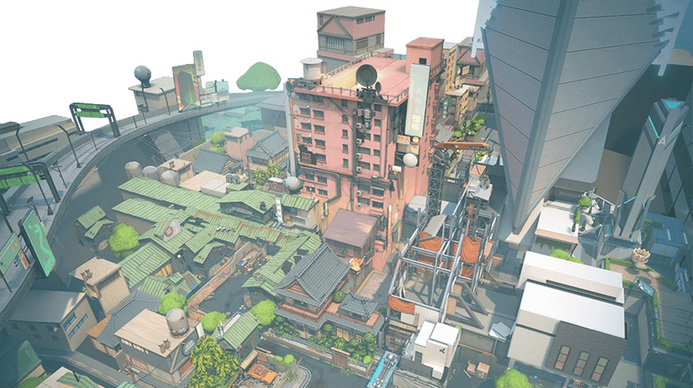
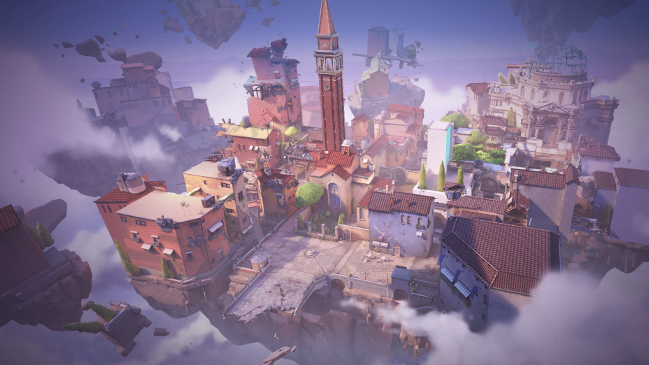

Valorant conta com 7 mapas:
Fracture - Um local de pesquisas altamente confidencial partido ao meio por um experimento com Radianita malsucedido.

Breeze - Com ruínas históricas ou grutas neste paraíso tropical. Tem espaços muito abertos e embates de longa distância.


Icebox - Uma área de escavação secreta da Kingdom retomada pela força do Ártico. Os terrenos horizontais dos dois pontos principais são protegidos por neve e metal.


Bind - Dois pontos. Nenhuma área no meio. Você precisa escolher: direita ou esquerda. Ambos os lados oferecem caminhos diretos para os atacantes, e dois teleportadores de sentido único facilitam o flanqueamento.

Haven - Sob um mosteiro abandonado, é possível ouvir agentes se enfrentando pelo controle de três pontos distintos. Neste mapa, há mais áreas para controlar. Em compensação, os defensores também conseguem aproveitar o território extra para coordenar investidas mais agressivas.


Split - Separados por uma área central elevada, dois pontos fornecem movimentação rápida com duas cordas ascendentes. Cada ponto tem uma torre imponente que é vital para o controle da área.

Ascent - Com várias opções de posicionamento e conflito, um território aberto divide duas áreas em Ascent. Cada uma pode ser fortificada por portas explosivas irreversíveis que, quando derrubadas, forçam as equipes a destruí-las ou a acharem outra maneira de prosseguir.
